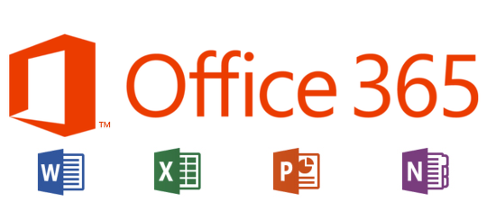

2018-2015: Bac pro S.E.N (Système.électronique.numerique) Charles coulombs
2013 : D.N.B
Experiences professionelles
2019-2018 Médiation numérique T.I.C service civique 8 mois
Accueil, gestion de caisse,ouverture et fermeture,installation de beach-flag et panneaux informatifs,affichage interne, transmettre appel ou message téléphonique. Médiation numérique aider les usagés pour des démarches administratives,faire de la maintenance informatique d'urgence,installer des postes informatiques, aidé les usagés en informatique et former le personnel en montage vidéo.
Stage Informatique et Electroménager
2016-2017 stage entreprise Pulsat centre (6 mois)
2016-2017 stage entreprise Ordimarques (6 mois)
2015-2016 stage Pulsat centre (6 mois)
2015-2016 stage entreprise Ordimarques (2 mois)
2014 stage découverte 3ème Ordimarques (1 mois)
Compétences aquises:
HTML CSS
Réceptions de marchandises
gestion de caisse
Ecrire des articles sur produits high-tech
Livraison et installation à domicile d'électroménager
Installations d'antennes
Transferts téléphoniques des S.A.V
Vente en rayon
Organisation des rayons
Photoshop
Suite 365 office 
Pédagogue apprendre et transmettre Médiateur numérique